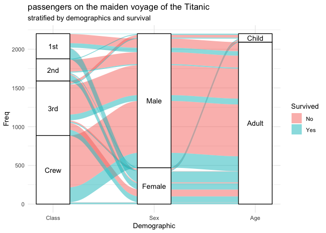
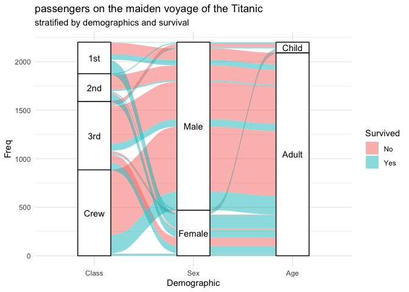

The alluvial plots implemented here can be used to visualize frequency distributions over time or frequency tables involving several categorical variables. The design is derived mostly from the alluvial package, but the ggplot2 framework induced several conspicuous differences:
The latest stable release can be installed from CRAN:
install.packages("ggalluvial")The cran branch will contain the version most recently submitted to CRAN.
Development versions can be installed from GitHub:
devtools::install_github("corybrunson/ggalluvial", build_vignettes = TRUE)The optimization branch contains a development version with experimental functions to reduce the number or area of alluvial overlaps (see issue #6). Install it as follows:
devtools::install_github("corybrunson/ggalluvial", ref = "optimization")Here is how to generate an alluvial diagram representation of the multi-dimensional categorical dataset of passengers on the Titanic:
titanic_wide <- data.frame(Titanic)
head(titanic_wide)
#> Class Sex Age Survived Freq
#> 1 1st Male Child No 0
#> 2 2nd Male Child No 0
#> 3 3rd Male Child No 35
#> 4 Crew Male Child No 0
#> 5 1st Female Child No 0
#> 6 2nd Female Child No 0
ggplot(data = titanic_wide,
aes(axis1 = Class, axis2 = Sex, axis3 = Age,
weight = Freq)) +
scale_x_discrete(limits = c("Class", "Sex", "Age")) +
geom_alluvium(aes(fill = Survived)) +
geom_stratum() + geom_text(stat = "stratum", label.strata = TRUE) +
theme_minimal() +
ggtitle("passengers on the maiden voyage of the Titanic",
"stratified by demographics and survival")
The data is in “wide” format, but ggalluvial also recognizes data in “long” format and can convert between the two:
titanic_long <- to_lodes(data.frame(Titanic),
key = "Demographic",
axes = 1:3)
head(titanic_long)
#> Survived Freq alluvium Demographic stratum
#> 1 No 0 1 Class 1st
#> 2 No 0 2 Class 2nd
#> 3 No 35 3 Class 3rd
#> 4 No 0 4 Class Crew
#> 5 No 0 5 Class 1st
#> 6 No 0 6 Class 2nd
ggplot(data = titanic_long,
aes(x = Demographic, stratum = stratum, alluvium = alluvium,
weight = Freq, label = stratum)) +
geom_alluvium(aes(fill = Survived)) +
geom_stratum() + geom_text(stat = "stratum") +
theme_minimal() +
ggtitle("passengers on the maiden voyage of the Titanic",
"stratified by demographics and survival")
For detailed discussion of the data formats recognized by ggalluvial and several examples that illustrate its flexibility and limitations, read the vignette:
vignette(topic = "ggalluvial", package = "ggalluvial")The documentation contains several examples; use help() to call forth examples of any layer (stat_* or geom_*).